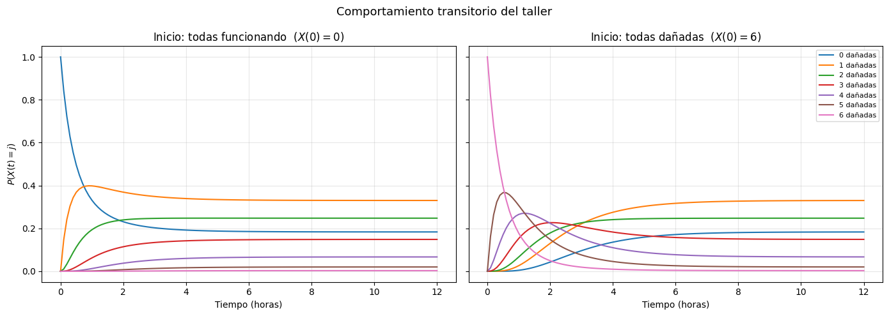
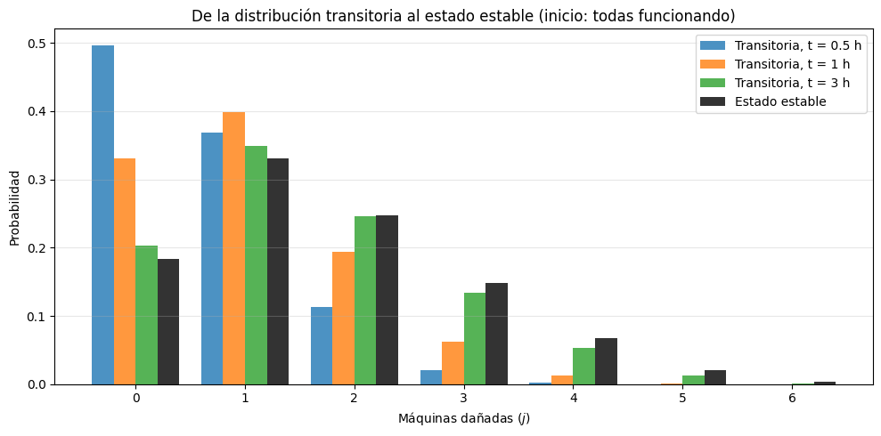
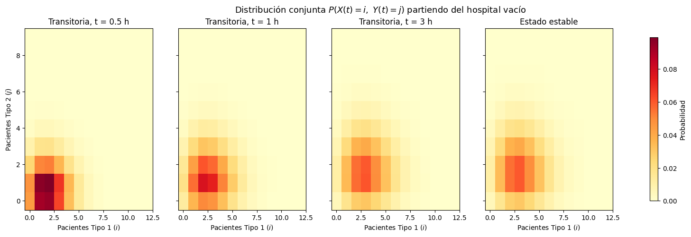

Complementaria Semana 8: Cadenas de Markov en Python I#
Esta semana das el salto de los modelos discretos a los modelos en tiempo continuo. Hasta ahora simulabas sistemas donde el tiempo avanzaba en pasos discretos; aquí el tiempo fluye sin interrupciones y los cambios de estado ocurren a tasas, no con probabilidades de paso.
La herramienta central es la matriz generadora \(Q\): una sola estructura que codifica toda la dinámica del proceso. En esta complementaria el foco está en construir bien \(Q\) y en entender, a nivel introductorio, dos formas de mirar el comportamiento del proceso: el estado transitorio y el estado estable.
Objetivos#
Construir e interpretar una matriz generadora \(Q\) de una CMTC.
Crear la cadena en
jmarkovy verificar sus propiedades (irreducibilidad y ergodicidad).Construir \(Q\) programáticamente a partir de las reglas de un sistema (primero con una variable de estado, luego con dos).
Entender la diferencia entre comportamiento transitorio y estado estable, y cómo el primero converge al segundo.
Estructura#
Sección |
Contenido |
|---|---|
1 |
CMTC sencilla: matriz \(Q\), creación de la cadena y propiedades |
2 |
Ejercicio con una variable: taller de mantenimiento. Introducción a estado transitorio y estable |
3 |
Aplicación: hospital con dos tipos de pacientes (construcción del modelo y visualización) |
4–5 |
Preguntas para pensar y resumen |
6 |
Guía de referencia con todos los análisis de cadenas de Markov en Python que usarás más adelante en el curso |
0. Preparación#
Instala jmarkov si aún no está en tu ambiente virtual. El resto de librerías (NumPy, pandas, matplotlib, SimPy) ya las tienes de semanas anteriores.
%pip install jmarkov
Requirement already satisfied: jmarkov in /opt/hostedtoolcache/Python/3.11.16/x64/lib/python3.11/site-packages (0.3.9)
Requirement already satisfied: numpy in /opt/hostedtoolcache/Python/3.11.16/x64/lib/python3.11/site-packages (from jmarkov) (2.4.1)
Requirement already satisfied: scipy in /opt/hostedtoolcache/Python/3.11.16/x64/lib/python3.11/site-packages (from jmarkov) (1.17.0)
Requirement already satisfied: typing in /opt/hostedtoolcache/Python/3.11.16/x64/lib/python3.11/site-packages (from jmarkov) (3.7.4.3)
Note: you may need to restart the kernel to use updated packages.
import numpy as np
import pandas as pd
import matplotlib.pyplot as plt
import simpy
from jmarkov.ctmc import ctmc
1. CMTC sencilla: la matriz \(Q\) y las propiedades de la cadena#
Comenzamos con una CMTC de tres estados para introducir la matriz generadora y las herramientas básicas de jmarkov. La matriz \(Q\) que usaremos es:
Cada fila debe sumar cero: la tasa de salida de un estado (\(|q_{ii}|\)) es exactamente la suma de las tasas hacia los demás estados.
¿Cómo leer \(Q\)?#
Cada entrada tiene una interpretación concreta:
Fuera de la diagonal, \(q_{ij}\) (\(i \neq j\)) es la tasa a la que el proceso salta de \(i\) a \(j\). Por ejemplo, \(q_{01}=2\) significa que, estando en el estado 0, los saltos hacia el estado 1 ocurren a razón de 2 por unidad de tiempo.
En la diagonal, \(-q_{ii}\) es la tasa total de salida del estado \(i\). El tiempo que el proceso permanece en \(i\) antes de saltar sigue una distribución \(\text{Exp}(-q_{ii})\), con media \(1/(-q_{ii})\).
Cuando el proceso sale de \(i\), va al estado \(j\) con probabilidad \(q_{ij}/(-q_{ii})\).
Por ejemplo, en el estado 0 la tasa de salida es 3: el proceso permanece en promedio \(1/3\) de unidad de tiempo y, al salir, va al estado 1 con probabilidad \(2/3\) y al estado 2 con probabilidad \(1/3\).
# Definimos la matriz generadora
Q = np.array([
[-3, 2, 1],
[1, -4, 3],
[2, 1, -3]
])
# Verificamos que las filas sumen cero (condición necesaria para que Q sea generadora)
print("Suma por filas:", Q.sum(axis=1))
# Creamos la cadena de Markov en tiempo continuo
cadena = ctmc(Q)
Suma por filas: [0 0 0]
Propiedades de la cadena#
Antes de estudiar su evolución verificamos dos propiedades clave:
Irreducibilidad: desde cualquier estado se puede llegar a cualquier otro. Sin esto, el sistema podría quedar atrapado en una región del espacio de estados.
Ergodicidad: la cadena admite una única distribución estacionaria a la que converge desde cualquier punto de partida.
print("Número de estados:", cadena.n_states)
print("¿Es irreducible?:", cadena.is_irreducible())
print("¿Es ergódica?:", cadena.is_ergodic())
Número de estados: 3
¿Es irreducible?: True
¿Es ergódica?: True
Para pensar: en esta \(Q\) todas las entradas fuera de la diagonal son positivas, así que desde cualquier estado se salta directamente a cualquier otro. ¿Seguiría siendo irreducible la cadena si \(q_{02} = 0\)? ¿Y si además \(q_{12}=0\)? Pruébalo modificando \(Q\) en la celda anterior.
2. Ejercicio con una variable: taller de mantenimiento#
En la sección anterior escribimos \(Q\) a mano. En problemas reales eso es inviable: \(Q\) se construye a partir de las reglas del sistema, normalmente con un ciclo. Este ejercicio tiene una sola variable de estado, pero las tasas dependen del estado, lo que lo hace más cercano a lo que verás en el modelo del hospital.
Enunciado#
Una planta tiene \(N = 6\) máquinas idénticas y \(c = 2\) técnicos de mantenimiento.
Cada máquina que está funcionando falla de forma independiente con tasa \(\lambda = 0.3\) fallas/hora.
Cada técnico repara una máquina a la vez, con tiempos de reparación exponenciales de tasa \(\mu = 1\) máquina/hora.
Si hay más máquinas dañadas que técnicos, las máquinas restantes esperan su turno.
Preguntas#
Define la variable de estado, el espacio de estados y las tasas de transición. Construye \(Q\) con un ciclo y crea la cadena en
jmarkov.Verifica las propiedades de la cadena.
Si al inicio del turno todas las máquinas funcionan, ¿cuál es la distribución del número de máquinas dañadas después de 1 hora? ¿Cómo evoluciona esa distribución en el tiempo?
¿Qué distribución se alcanza en el largo plazo? ¿Depende de cómo empezó el turno?
2.1 Modelo#
Variable de estado: \(X(t)\) = número de máquinas dañadas al tiempo \(t\).
Espacio de estados: \(S = \{0, 1, \ldots, N\} = \{0, 1, \ldots, 6\}\).
Transiciones: desde el estado \(i\) solo puede ocurrir una falla (\(i \to i+1\)) o una reparación (\(i \to i-1\)).
Evento |
Transición |
Tasa |
¿Por qué? |
|---|---|---|---|
Falla |
\(i \to i+1\) |
\((N-i)\,\lambda\) |
hay \(N-i\) máquinas funcionando, cada una falla con tasa \(\lambda\) |
Reparación |
\(i \to i-1\) |
\(\min(i, c)\,\mu\) |
trabajan \(\min(i,c)\) técnicos: no puede haber más técnicos ocupados que máquinas dañadas |
Con esto:
Matriz generadora:
# Parámetros del taller
N_maq = 6 # número de máquinas
c_tec = 2 # número de técnicos
lam = 0.3 # tasa de falla por máquina funcionando (fallas/hora)
mu = 1.0 # tasa de reparación por técnico (máquinas/hora)
def construir_Q_taller(N, c, lam, mu):
# Construye la matriz generadora del taller de mantenimiento.
# Estado i = número de máquinas dañadas, i = 0, ..., N.
n = N + 1
Q = np.zeros((n, n))
for i in range(n):
if i < N: # puede fallar una máquina más
Q[i, i + 1] = (N - i) * lam
if i > 0: # puede terminar una reparación
Q[i, i - 1] = min(i, c) * mu
Q[i, i] = -Q[i].sum() # diagonal: la fila debe sumar cero
return Q
Q_taller = construir_Q_taller(N_maq, c_tec, lam, mu)
# Mostrarla como DataFrame para leerla con etiquetas
estados_taller = list(range(N_maq + 1))
pd.DataFrame(Q_taller, index=estados_taller, columns=estados_taller).round(2)
| 0 | 1 | 2 | 3 | 4 | 5 | 6 | |
|---|---|---|---|---|---|---|---|
| 0 | -1.8 | 1.8 | 0.0 | 0.0 | 0.0 | 0.0 | 0.0 |
| 1 | 1.0 | -2.5 | 1.5 | 0.0 | 0.0 | 0.0 | 0.0 |
| 2 | 0.0 | 2.0 | -3.2 | 1.2 | 0.0 | 0.0 | 0.0 |
| 3 | 0.0 | 0.0 | 2.0 | -2.9 | 0.9 | 0.0 | 0.0 |
| 4 | 0.0 | 0.0 | 0.0 | 2.0 | -2.6 | 0.6 | 0.0 |
| 5 | 0.0 | 0.0 | 0.0 | 0.0 | 2.0 | -2.3 | 0.3 |
| 6 | 0.0 | 0.0 | 0.0 | 0.0 | 0.0 | 2.0 | -2.0 |
print("¿Todas las filas suman cero?:", np.allclose(Q_taller.sum(axis=1), 0))
taller = ctmc(Q_taller)
print("Número de estados:", taller.n_states)
print("¿Es irreducible?:", taller.is_irreducible())
print("¿Es ergódica?:", taller.is_ergodic())
¿Todas las filas suman cero?: True
Número de estados: 7
¿Es irreducible?: True
¿Es ergódica?: True
Fíjate en la estructura de \(Q\): solo tiene entradas distintas de cero en la diagonal y en las dos diagonales vecinas. Este tipo de cadena, donde el estado solo sube o baja de a uno, se llama proceso de nacimiento y muerte. La cadena es irreducible porque desde cualquier estado se puede subir o bajar paso a paso hasta cualquier otro.
2.2 Estado transitorio#
La primera pregunta que le hacemos a la cadena es: si sé cómo empezó el sistema, ¿qué tan probable es cada estado en un instante \(t\) concreto?
La respuesta es un vector \(\pi(t)\) cuya entrada \(j\) es \(P(X(t)=j)\). Se obtiene a partir de la distribución inicial \(\pi(0)\) y de \(Q\):
Esta expresión es la solución de las ecuaciones de Kolmogorov, \(\frac{d\pi(t)}{dt} = \pi(t)Q\), que profundizarás en clase. Por ahora basta con la idea: \(Q\) más el punto de partida determinan toda la distribución en cualquier instante, y jmarkov hace el cálculo con transient_probabilities.
A esta distribución se le llama transitoria porque depende de dos cosas: del tiempo transcurrido \(t\) y del estado inicial \(\pi(0)\).
# Al inicio del turno todas las máquinas funcionan: X(0) = 0 con probabilidad 1
pi0_taller = np.zeros(N_maq + 1)
pi0_taller[0] = 1
pi_1h = taller.transient_probabilities(t=1, alpha=pi0_taller)
pd.DataFrame({"Máquinas dañadas": estados_taller,
"P(X(1) = j)": np.round(pi_1h, 4)}).set_index("Máquinas dañadas")
| P(X(1) = j) | |
|---|---|
| Máquinas dañadas | |
| 0 | 0.3313 |
| 1 | 0.3982 |
| 2 | 0.1938 |
| 3 | 0.0624 |
| 4 | 0.0127 |
| 5 | 0.0015 |
| 6 | 0.0001 |
Cada entrada del vector es la probabilidad de un estado, y el vector completo suma 1. Una sola evaluación es una “foto” del sistema en \(t=1\). Para ver la película completa, evaluamos \(\pi(t)\) en muchos instantes y graficamos cada estado.
Además lo hacemos desde dos puntos de partida distintos: un turno que empieza con todas las máquinas funcionando y uno que empieza con todas dañadas.
tiempos_taller = np.linspace(0, 12, 121)
pi0_todas_bien = np.zeros(N_maq + 1); pi0_todas_bien[0] = 1 # X(0) = 0
pi0_todas_mal = np.zeros(N_maq + 1); pi0_todas_mal[N_maq] = 1 # X(0) = N
evol_bien = np.array([taller.transient_probabilities(t=t, alpha=pi0_todas_bien) for t in tiempos_taller])
evol_mal = np.array([taller.transient_probabilities(t=t, alpha=pi0_todas_mal) for t in tiempos_taller])
fig, axes = plt.subplots(1, 2, figsize=(14, 5), sharey=True)
for ax, evol, titulo in zip(axes, [evol_bien, evol_mal],
["Inicio: todas funcionando ($X(0)=0$)",
f"Inicio: todas dañadas ($X(0)={N_maq}$)"]):
for j in estados_taller:
ax.plot(tiempos_taller, evol[:, j], label=f"{j} dañadas")
ax.set_title(titulo)
ax.set_xlabel("Tiempo (horas)")
ax.grid(alpha=0.3)
axes[0].set_ylabel("$P(X(t) = j)$")
axes[1].legend(loc="upper right", fontsize=8)
plt.suptitle("Comportamiento transitorio del taller", fontsize=13)
plt.tight_layout()
plt.show()

¿Qué observar?
Al principio las dos gráficas son muy distintas: el punto de partida domina el comportamiento.
Con el paso del tiempo las curvas se estabilizan y, en ambos casos, se acercan a los mismos valores. El sistema “olvida” cómo empezó.
La convergencia no es igual de rápida desde cualquier punto de partida: desde “todas dañadas” el sistema tarda más en acercarse a esos valores, porque tiene que reparar muchas máquinas con solo dos técnicos.
Esos valores a los que convergen las curvas son justamente el estado estable.
2.3 Estado estable#
Si la cadena es ergódica, cuando \(t \to \infty\) la distribución transitoria converge a un único vector \(\pi\) que ya no depende ni del tiempo ni del estado inicial. Ese vector es la solución de:
La primera ecuación dice que, en equilibrio, el flujo de probabilidad que entra a cada estado es igual al que sale; la segunda asegura que \(\pi\) sea una distribución de probabilidad. Por eso la ergodicidad que verificamos en la sección 1 es importante: garantiza que este vector existe, es único y es a donde llega el sistema.
Interpretación: \(\pi_j\) es la fracción del tiempo, en el largo plazo, que el sistema pasa en el estado \(j\).
pi_taller = taller.steady_state()
pd.DataFrame({"Máquinas dañadas": estados_taller,
"π_j": np.round(pi_taller, 4)}).set_index("Máquinas dañadas")
| π_j | |
|---|---|
| Máquinas dañadas | |
| 0 | 0.1835 |
| 1 | 0.3303 |
| 2 | 0.2477 |
| 3 | 0.1486 |
| 4 | 0.0669 |
| 5 | 0.0201 |
| 6 | 0.0030 |
Por último, comparamos la distribución transitoria en varios instantes con el estado estable. Así se ve de forma directa cómo \(\pi(t) \to \pi\):
ancho = 0.2
x = np.arange(N_maq + 1)
fig, ax = plt.subplots(figsize=(10, 5))
for k, t in enumerate([0.5, 1, 3]):
pi_t = taller.transient_probabilities(t=t, alpha=pi0_todas_bien)
ax.bar(x + (k - 1.5) * ancho, pi_t, width=ancho, label=f"Transitoria, t = {t} h", alpha=0.8)
ax.bar(x + 1.5 * ancho, pi_taller, width=ancho, label="Estado estable", color="black", alpha=0.8)
ax.set_xticks(x)
ax.set_xlabel("Máquinas dañadas ($j$)")
ax.set_ylabel("Probabilidad")
ax.set_title("De la distribución transitoria al estado estable (inicio: todas funcionando)")
ax.legend()
ax.grid(axis="y", alpha=0.3)
plt.tight_layout()
plt.show()

2.4 Transitorio vs. estable: resumen#
Estado transitorio \(\pi(t)\) |
Estado estable \(\pi\) |
|
|---|---|---|
Pregunta que responde |
¿Qué tan probable es cada estado en el instante \(t\)? |
¿Qué fracción del tiempo pasa el sistema en cada estado en el largo plazo? |
¿Depende de \(t\)? |
Sí |
No |
¿Depende del estado inicial? |
Sí |
No (si la cadena es ergódica) |
Cómo se obtiene |
\(\pi(t) = \pi(0)\,e^{Qt}\) |
\(\pi Q = 0,\ \sum_i \pi_i = 1\) |
En |
|
|
Uso típico |
Planear un turno, un horizonte corto, el arranque de un sistema |
Dimensionar recursos para la operación “normal” del sistema |
#
Ahora cambia el número de técnicos a
c_tec = 3y vuelve a correr la sección 2. ¿Cómo cambia la distribución de estado estable? ¿El sistema converge más rápido o más lento? ¿Y si la tasa de falla sube alam = 0.6?
3. Aplicación: hospital en tiempo continuo#
Ahora aplicamos lo anterior a un sistema con dos variables de estado. El procedimiento es el mismo que en el taller (reglas del sistema \(\rightarrow\) \(Q\) \(\rightarrow\) cadena \(\rightarrow\) propiedades \(\rightarrow\) transitorio y estable), pero el estado pasa a ser un par de números, lo que obliga a organizar mejor el código.
Enunciado: Hospital con dos tipos de pacientes#
Considera un hospital con \(B = 20\) camas y dos tipos de pacientes:
Los pacientes de tipo 1 llegan según un proceso de Poisson con tasa \(\lambda_1 = 6.5\) pacientes/hora y tienen tiempos de servicio exponenciales con tasa \(\mu_1 = 2\) pacientes/hora.
Los pacientes de tipo 2 llegan con tasa \(\lambda_2 = 3\) pacientes/hora y tienen tiempos de servicio exponenciales con tasa \(\mu_2 = 1.5\) pacientes/hora.
Política de admisión: el hospital reserva \(b = 5\) camas exclusivamente para pacientes de tipo 1. Un paciente de tipo 1 se admite siempre que haya al menos una cama libre. Un paciente de tipo 2 se admite solo si hay cama disponible y el número de pacientes de tipo 2 ya hospitalizados es menor que \(B - b = 15\).
Preguntas#
Construye la matriz de tasas de transición \(Q\) y crea la cadena de Markov en
jmarkov.Verifica las propiedades de la cadena.
Si el hospital inicia vacío, visualiza cómo evoluciona la distribución conjunta de \((X(t), Y(t))\) y compárala con la distribución de estado estable.
1. Construcción de \(Q\) y la cadena en jmarkov#
Variables de estado:
\(X(t)\): número de pacientes tipo 1 en el hospital al tiempo \(t\).
\(Y(t)\): número de pacientes tipo 2 en el hospital al tiempo \(t\).
\(Z(t) = (X(t),\, Y(t))\): estado conjunto.
Espacio de estados:
Nota: la restricción \(i + j \le B\) reduce el espacio de estados a \(216\) pares válidos (no \(21 \times 16 = 336\)). Que el estado sea bidimensional implica que la distribución de probabilidad es una distribución conjunta sobre dos variables, no una distribución univariada.
Matriz generadora:
A continuación se implementa este modelo paso a paso.
# Parámetros del modelo
B = 20 # capacidad total del hospital (camas)
b = 5 # camas reservadas para pacientes tipo 1
lambda_1 = 6.5 # tasa de llegada tipo 1 (pacientes/hora)
lambda_2 = 3 # tasa de llegada tipo 2 (pacientes/hora)
mu_1 = 2 # tasa de servicio tipo 1 (pacientes/hora)
mu_2 = 1.5 # tasa de servicio tipo 2 (pacientes/hora)
# Generar todos los pares (i, j) válidos
estados = []
for i in range(B + 1):
for j in range(B - b + 1):
if i + j <= B:
estados.append((i, j))
print(f"Tamaño del espacio de estados: {len(estados)} pares válidos")
# Convertir a etiquetas de texto para indexar el DataFrame
etiquetas = [str(estado) for estado in estados]
Tamaño del espacio de estados: 216 pares válidos
# Inicializar la matriz Q con ceros
Q_hospital = pd.DataFrame(0.0, index=etiquetas, columns=etiquetas)
# Llenar las tasas de transición según las reglas del modelo
for (i, j) in estados:
estado_actual = str((i, j))
# Llegada de paciente tipo 1: hay cama disponible
if i + j < B:
Q_hospital.loc[estado_actual, str((i + 1, j))] = lambda_1
# Llegada de paciente tipo 2: hay cama disponible y no se supera B - b
if (i + j < B) and (j < B - b):
Q_hospital.loc[estado_actual, str((i, j + 1))] = lambda_2
# Salida de paciente tipo 1 (tasa proporcional al número actual)
if i > 0:
Q_hospital.loc[estado_actual, str((i - 1, j))] = i * mu_1
# Salida de paciente tipo 2 (tasa proporcional al número actual)
if j > 0:
Q_hospital.loc[estado_actual, str((i, j - 1))] = j * mu_2
# Ajustar la diagonal para que cada fila sume cero
filas_suma = Q_hospital.sum(axis=1)
for estado in estados:
lbl = str(estado)
Q_hospital.loc[lbl, lbl] = -filas_suma[lbl]
# Verificación
print("¿Todas las filas suman cero?:", np.allclose(Q_hospital.sum(axis=1), 0))
print(f"Dimensión de Q: {Q_hospital.shape}")
¿Todas las filas suman cero?: True
Dimensión de Q: (216, 216)
Inspección de la matriz \(Q\)#
En modelos con muchos estados es conveniente exportar \(Q\) para revisar la estructura de tasas fuera del notebook. Esta es una herramienta auxiliar de verificación: lo importante es que cada transición del modelo hospitalario quede correctamente representada.
%pip install openpyxl
Requirement already satisfied: openpyxl in /opt/hostedtoolcache/Python/3.11.16/x64/lib/python3.11/site-packages (3.1.5)
Requirement already satisfied: et-xmlfile in /opt/hostedtoolcache/Python/3.11.16/x64/lib/python3.11/site-packages (from openpyxl) (2.0.0)
Note: you may need to restart the kernel to use updated packages.
# Exportar Q a Excel para inspección manual
nombre_archivo = "matriz_Q_hospital.xlsx"
Q_hospital.to_excel(nombre_archivo)
print(f"Matriz exportada a '{nombre_archivo}'.")
Matriz exportada a 'matriz_Q_hospital.xlsx'.
Una vez verificada \(Q\), creamos la cadena de Markov en tiempo continuo con jmarkov y confirmamos sus propiedades básicas.
# Crear la cadena en tiempo continuo
hospital_chain = ctmc(Q_hospital.to_numpy())
print(f"Número de estados: {hospital_chain.n_states}")
print(f"¿Es irreducible?: {hospital_chain.is_irreducible()}")
print(f"¿Es ergódica?: {hospital_chain.is_ergodic()}")
Número de estados: 216
¿Es irreducible?: True
¿Es ergódica?: True
Mapeo entre estados del modelo e índices de Python#
El espacio de estados usa pares \((i,j)\), pero NumPy y jmarkov indexan vectores con enteros. El siguiente diccionario traduce entre los dos mundos y evita errores de indexación en el resto del notebook.
# Diccionario: par (i,j) -> índice entero en el vector de probabilidades
mapa_indices = {estado: idx for idx, estado in enumerate(estados)}
def index(i, j):
"""Devuelve el índice entero correspondiente al estado (i, j)."""
return mapa_indices[(i, j)]
# Verificación rápida
print(f"Índice del estado (0, 0): {index(0, 0)}")
print(f"Índice del estado (1, 3): {index(1, 3)}")
Índice del estado (0, 0): 0
Índice del estado (1, 3): 19
3.1 De lo transitorio a lo estable en el hospital#
Igual que en el taller, calculamos la distribución transitoria partiendo del hospital vacío,
y la comparamos con la distribución de estado estable. La diferencia es que ahora cada distribución vive sobre pares \((i,j)\): es una distribución conjunta de dos variables. Por eso, en lugar de un gráfico de barras, la visualizamos como un mapa de calor, donde cada celda \((i,j)\) es un estado y su color es su probabilidad.
Primero una función auxiliar que reorganiza el vector de probabilidades (un número por estado) en una matriz de \((B+1)\times(B-b+1)\):
def a_matriz(vector_probs):
# Reorganiza un vector de probabilidades (indexado por estado) en una matriz tipo1 × tipo2.
matriz = np.zeros((B + 1, B - b + 1))
for (i, j) in estados:
matriz[i, j] = vector_probs[index(i, j)]
return matriz
# Estado inicial: hospital vacío con probabilidad 1
alpha = np.zeros(len(estados))
alpha[index(0, 0)] = 1
# Distribuciones transitorias en algunos instantes y distribución de estado estable
tiempos_hosp = [0.5, 1, 3]
dist_transitorias = {t: hospital_chain.transient_probabilities(t=t, alpha=alpha) for t in tiempos_hosp}
pi_hospital = hospital_chain.steady_state()
for t, vec in dist_transitorias.items():
print(f"t = {t:>3} h -> suma de probabilidades = {vec.sum():.6f}")
print(f"Estable -> suma de probabilidades = {pi_hospital.sum():.6f}")
t = 0.5 h -> suma de probabilidades = 1.000000
t = 1 h -> suma de probabilidades = 1.000000
t = 3 h -> suma de probabilidades = 1.000000
Estable -> suma de probabilidades = 1.000000
max_i_show, max_j_show = 13, 10 # región con probabilidad no despreciable
paneles = [(f"Transitoria, t = {t} h", a_matriz(dist_transitorias[t])) for t in tiempos_hosp]
paneles.append(("Estado estable", a_matriz(pi_hospital)))
vmax = max(m[:max_i_show, :max_j_show].max() for _, m in paneles)
fig, axes = plt.subplots(1, 4, figsize=(20, 5), sharey=True)
for ax, (titulo, matriz) in zip(axes, paneles):
im = ax.imshow(matriz[:max_i_show, :max_j_show].T, origin="lower", aspect="auto",
cmap="YlOrRd", vmin=0, vmax=vmax)
ax.set_title(titulo)
ax.set_xlabel("Pacientes Tipo 1 ($i$)")
axes[0].set_ylabel("Pacientes Tipo 2 ($j$)")
fig.colorbar(im, ax=axes, label="Probabilidad", shrink=0.9)
plt.suptitle("Distribución conjunta $P(X(t)=i,\\ Y(t)=j)$ partiendo del hospital vacío", fontsize=13)
plt.show()
for titulo, matriz in paneles:
i_max, j_max = np.unravel_index(matriz.argmax(), matriz.shape)
print(f"{titulo:<22}: estado más probable = ({i_max}, {j_max}) con P = {matriz[i_max, j_max]:.4f}")

Transitoria, t = 0.5 h: estado más probable = (2, 1) con P = 0.0994
Transitoria, t = 1 h : estado más probable = (2, 1) con P = 0.0781
Transitoria, t = 3 h : estado más probable = (3, 1) con P = 0.0607
Estado estable : estado más probable = (3, 1) con P = 0.0600
¿Cómo leer los mapas de calor? Cada celda \((i,j)\) es un estado del sistema, y su color es la probabilidad de que el hospital tenga exactamente \(i\) pacientes de tipo 1 y \(j\) de tipo 2. Todos los paneles usan la misma escala de color para poder compararlos.
En \(t = 0.5\) h la masa de probabilidad todavía está cerca de la esquina \((0,0)\): el hospital acaba de abrir y se está llenando.
A medida que pasa el tiempo la masa se desplaza y se dispersa, y hacia \(t = 3\) h el mapa ya es prácticamente indistinguible del de estado estable.
En el largo plazo la probabilidad se concentra muy lejos del tope de 20 camas: con estas tasas, el hospital rara vez se llena.
4. Preguntas para pensar#
¿Qué significa que \(q_{ii}\) sea negativo? ¿Qué relación hay entre \(-q_{ii}\) y el tiempo que el proceso permanece en el estado \(i\)?
En el taller, ¿por qué la tasa de reparación es \(\min(i, c)\,\mu\) y no simplemente \(c\,\mu\)? ¿Qué pasaría con el modelo si usaras \(c\,\mu\) en todos los estados con \(i>0\)?
En el hospital, ¿por qué la tasa de salida de pacientes tipo 1 es \(i\cdot\mu_1\) y no \(\mu_1\)?
¿Por qué la distribución transitoria depende del estado inicial y la de estado estable no? ¿Qué propiedad de la cadena se necesita para que esto último sea cierto?
Da un ejemplo operativo (en el taller o en el hospital) de una decisión que tomarías con la distribución transitoria y otra que tomarías con la de estado estable.
¿Qué cambia al pasar de una variable de estado (taller) a dos (hospital)? Piensa en el tamaño del espacio de estados, en cómo se indexan los estados en Python y en cómo se visualiza la distribución.
5. Resumen#
La matriz generadora \(Q\) codifica toda la dinámica de una CMTC: tasas de transición fuera de la diagonal y tasas de salida (con signo negativo) en la diagonal. Cada fila suma cero.
En la práctica, \(Q\) se construye con un ciclo a partir de las reglas del sistema; las tasas pueden depender del estado (por ejemplo, \((N-i)\lambda\) o \(\min(i,c)\mu\)).
Antes de analizar una cadena se verifican sus propiedades: irreducibilidad y ergodicidad.
La distribución transitoria \(\pi(t) = \pi(0)\,e^{Qt}\) describe el sistema en un instante concreto y depende del punto de partida.
Si la cadena es ergódica, \(\pi(t)\) converge a una única distribución de estado estable \(\pi\) que resuelve \(\pi Q = 0\), \(\sum_i \pi_i = 1\), y no depende del estado inicial.
Con un estado de dos variables la distribución es conjunta; se necesita un mapeo entre estados \((i,j)\) e índices enteros para trabajar en Python.
6. Guía de referencia: cadenas de Markov en Python#
Lee esto primero. Esta sección no es parte de lo que debes dominar esta semana. Es una guía de consulta que reúne, en un solo lugar, todo lo que vas a necesitar sobre cadenas de Markov en Python a lo largo del curso: qué preguntas se le hacen a una cadena, con qué objeto o método se responden y un ejemplo de código funcionando.
Varios de estos análisis (probabilidades de eventos, esperanzas y varianzas, tiempos de primera pasada, tiempos de ocupación, validación por simulación) los verás en clase en las próximas semanas. No tienes que entenderlo todo ahora. Vuelve aquí cuando el tema aparezca y usa los ejemplos como plantilla.
Los ejemplos reutilizan los objetos creados arriba (
cadena,taller,hospital_chain,estados,index,a_matriz), así que ejecuta primero las secciones 1 a 3.
6.1 Mapa general: preguntas de interés y cómo responderlas#
Pregunta de interés |
Notación |
Cómo se obtiene en Python |
Devuelve |
|---|---|---|---|
¿Es válida la matriz? |
filas de \(Q\) suman 0 |
|
|
Crear la cadena |
— |
|
objeto cadena |
¿Se puede ir de cualquier estado a cualquier otro? |
irreducibilidad |
|
|
¿Existe una única distribución de largo plazo? |
ergodicidad |
|
|
Distribución en el instante \(t\) |
\(\pi(t)=\pi(0)e^{Qt}\) |
|
vector de tamaño \(n\) |
Distribución de largo plazo |
\(\pi Q = 0\) |
|
vector de tamaño \(n\) |
Probabilidad de un estado |
\(P(X(t)=j)\) |
|
número |
Probabilidad de un evento |
\(P(X(t)\in A)\) |
|
número |
Valor esperado |
\(E[X(t)] = \sum_j j\,\pi_j(t)\) |
|
número |
Varianza |
\(E[X^2]-E[X]^2\) |
|
número |
Marginales (estado de dos variables) |
\(P(X=i)=\sum_j P(X=i,Y=j)\) |
|
vectores |
Tiempo esperado hasta llegar a un estado |
\(m_{ij}\) |
|
vector (uno por estado de origen) |
Tiempo esperado en cada estado durante \([0,T]\) |
\(\int_0^T P(X(t)=j\mid X(0)=i)\,dt\) |
|
matriz \(n \times n\) |
Validar resultados analíticos |
frecuencias relativas |
simulación (SimPy o saltos desde \(Q\)) |
estimaciones |
Las subsecciones siguientes muestran cada fila de la tabla con un ejemplo.
6.2 Probabilidad de un estado y de un evento#
Una vez tienes el vector \(\pi(t)\) (o \(\pi\)), la probabilidad de un estado es una entrada del vector, y la probabilidad de un evento (un conjunto de estados \(A\)) es la suma de las entradas de los estados de \(A\).
Ejemplo (hospital, vacío al inicio, \(t = 6\) h):
\(P(X(6)=1,\ Y(6)=3)\): exactamente 1 paciente tipo 1 y 3 tipo 2.
\(P(X(6)+Y(6) = B)\): el hospital está lleno.
\(P(X(6)+Y(6) \geq 10)\): hay al menos 10 camas ocupadas.
t_eval = 6
probs_transitorias_6h = hospital_chain.transient_probabilities(t=t_eval, alpha=alpha)
# Probabilidad de un estado: una entrada del vector
prob_1_3 = probs_transitorias_6h[index(1, 3)]
print(f"P(X(6)=1, Y(6)=3) = {prob_1_3:.6f}")
# Probabilidad de un evento: suma sobre los estados que lo cumplen
prob_lleno = sum(probs_transitorias_6h[index(i, j)] for (i, j) in estados if i + j == B)
prob_10_mas = sum(probs_transitorias_6h[index(i, j)] for (i, j) in estados if i + j >= 10)
print(f"P(hospital lleno) = {prob_lleno:.6f}")
print(f"P(al menos 10 camas) = {prob_10_mas:.6f}")
P(X(6)=1, Y(6)=3) = 0.022737
P(hospital lleno) = 0.000001
P(al menos 10 camas) = 0.041814
6.3 Distribuciones marginales, valor esperado y varianza#
Cuando el estado tiene dos variables, la distribución de cada una por separado (marginal) se obtiene sumando sobre la otra:
Con cada marginal, el valor esperado y la varianza se calculan de la forma habitual.
pi_matrix = a_matriz(probs_transitorias_6h)
# Marginales: sumar sobre la otra variable
marginal_X = pi_matrix.sum(axis=1) # suma sobre j -> distribución de X
marginal_Y = pi_matrix.sum(axis=0) # suma sobre i -> distribución de Y
valores_X = np.arange(B + 1)
valores_Y = np.arange(B - b + 1)
E_X = np.sum(valores_X * marginal_X)
E_Y = np.sum(valores_Y * marginal_Y)
Var_X = np.sum(valores_X**2 * marginal_X) - E_X**2
Var_Y = np.sum(valores_Y**2 * marginal_Y) - E_Y**2
print(f"E[X(6)] = {E_X:.3f} pacientes tipo 1 en promedio")
print(f"E[Y(6)] = {E_Y:.3f} pacientes tipo 2 en promedio")
print(f"Var[X(6)] = {Var_X:.3f} σ_X = {Var_X**0.5:.3f}")
print(f"Var[Y(6)] = {Var_Y:.3f} σ_Y = {Var_Y**0.5:.3f}")
E[X(6)] = 3.250 pacientes tipo 1 en promedio
E[Y(6)] = 2.000 pacientes tipo 2 en promedio
Var[X(6)] = 3.250 σ_X = 1.803
Var[Y(6)] = 2.000 σ_Y = 1.414
# Histogramas de las distribuciones marginales
fig, axes = plt.subplots(1, 2, figsize=(14, 4))
axes[0].bar(valores_X, marginal_X, color='#3498db', edgecolor='black', alpha=0.8)
axes[0].set_xlabel('Pacientes Tipo 1 ($i$)')
axes[0].set_ylabel('$P(X(6) = i)$')
axes[0].set_title('Distribución marginal de $X(6)$\n(Pacientes Tipo 1)')
axes[0].set_xlim(-0.5, 12)
axes[0].grid(axis='y', alpha=0.3)
axes[1].bar(valores_Y, marginal_Y, color='#e74c3c', edgecolor='black', alpha=0.8)
axes[1].set_xlabel('Pacientes Tipo 2 ($j$)')
axes[1].set_ylabel('$P(Y(6) = j)$')
axes[1].set_title('Distribución marginal de $Y(6)$\n(Pacientes Tipo 2)')
axes[1].set_xlim(-0.5, 12)
axes[1].grid(axis='y', alpha=0.3)
plt.tight_layout()
plt.show()

Con una sola variable de estado (como el taller) no hace falta el paso de marginales: el vector \(\pi(t)\) ya es la distribución de \(X(t)\). Por ejemplo, el número esperado de máquinas dañadas en el largo plazo es simplemente:
E_danadas = np.sum(np.arange(N_maq + 1) * pi_taller)
print(f"E[máquinas dañadas] en estado estable = {E_danadas:.3f}")
print(f"P(al menos una máquina esperando técnico) = P(X > c) = {pi_taller[c_tec + 1:].sum():.4f}")
E[máquinas dañadas] en estado estable = 1.657
P(al menos una máquina esperando técnico) = P(X > c) = 0.2386
6.4 Tiempo de primera pasada#
Pregunta: ¿cuánto tiempo tarda el proceso, en promedio, en llegar por primera vez a un estado objetivo? A diferencia de la distribución transitoria, que da probabilidades, el tiempo promedio de primera pasada \(m_{ij}\) da una duración esperada.
first_passage_time recibe el estado (o conjunto de estados) destino y devuelve un vector con el tiempo esperado para llegar allí desde cada estado de origen.
Ejemplo (cadena de la sección 1): tiempo esperado para ir del estado 1 al estado 2.
# Nombres de los estados para indexar
nombres_estados = np.array(['0', '1', '2'])
estado_inicial = np.where(nombres_estados == '1')
estado_futuro = np.where(nombres_estados == '2')
# Calcular el vector de tiempos de primera pasada hacia el estado 2
fpts = cadena.first_passage_time(estado_futuro)
print("Tiempos de primera pasada al estado 2 (desde cada estado):")
print(fpts)
# Extraer el tiempo desde el estado 1 al estado 2
tiempo_1_2 = fpts[estado_inicial][0][0]
print(f"\nE[tiempo de primera pasada de 1 → 2] = {round(tiempo_1_2, 3)}")
Tiempos de primera pasada al estado 2 (desde cada estado):
[[0.6]
[0.4]]
E[tiempo de primera pasada de 1 → 2] = 0.4
6.5 Tiempo de ocupación#
Pregunta: durante un horizonte \([0, T]\), ¿cuánto tiempo pasa el proceso en cada estado en promedio? Esto convierte las probabilidades puntuales en una medida acumulada de permanencia:
occupation_time devuelve una matriz: la fila \(i\) es el estado de origen y la columna \(j\) el estado en el que se mide el tiempo. La suma de cada fila debe ser exactamente \(T\), lo cual sirve como verificación.
Ejemplo (cadena de la sección 1, \(T = 4\)):
tiempo_ocupacion = cadena.occupation_time(T=4)
print("Tiempo esperado en cada estado durante T=4 unidades:")
print(tiempo_ocupacion)
# Verificación: la suma por filas debe ser T=4
print(f"\nSuma por filas (debe ser 4): {tiempo_ocupacion.sum(axis=1)}")
# Ejemplo puntual: tiempo en el estado 2 partiendo del estado 1
print(f"\nTiempo en estado 2 partiendo de estado 1: {round(tiempo_ocupacion[1][2], 3)}")
Tiempo esperado en cada estado durante T=4 unidades:
[[1.52070832 1.0502945 1.42899215]
[1.28993909 1.20414066 1.50591523]
[1.32840063 1.01183297 1.65976138]]
Suma por filas (debe ser 4): [3.99999497 3.99999497 3.99999497]
Tiempo en estado 2 partiendo de estado 1: 1.506
6.6 Validación mediante simulación#
Todo lo anterior se obtiene resolviendo ecuaciones exactas a partir de \(Q\). La simulación sirve para (1) verificar que el modelo analítico está bien construido y (2) estimar medidas cuando la solución exacta es difícil de obtener. La idea es simular muchas réplicas, registrar el estado final de cada una y usar las frecuencias relativas como estimación de las probabilidades.
Hay dos estrategias:
(a) Simular los procesos físicos con SimPy: se modelan por separado las llegadas y los servicios de cada tipo de paciente.
def simular_hospital_procesos(n_simulaciones, t_final, semilla=42):
"""
Simula el hospital modelando explícitamente los procesos de llegada
y servicio de cada tipo de paciente con SimPy.
Devuelve una lista con el estado (tipo1, tipo2) al final de cada réplica.
"""
rng = np.random.default_rng(semilla)
resultados = []
for _ in range(n_simulaciones):
env = simpy.Environment()
estado = {'tipo1': 0, 'tipo2': 0}
def llegadas_tipo1(env, estado):
while True:
yield env.timeout(rng.exponential(1 / lambda_1)) # inter-llegada ~ Exp(λ₁)
if estado['tipo1'] + estado['tipo2'] < B: # cama disponible
estado['tipo1'] += 1
env.process(servicio_tipo1(env, estado))
def llegadas_tipo2(env, estado):
while True:
yield env.timeout(rng.exponential(1 / lambda_2)) # inter-llegada ~ Exp(λ₂)
# admitir solo si hay cama y no se supera la cuota de tipo 2
if estado['tipo1'] + estado['tipo2'] < B and estado['tipo2'] < B - b:
estado['tipo2'] += 1
env.process(servicio_tipo2(env, estado))
def servicio_tipo1(env, estado):
yield env.timeout(rng.exponential(1 / mu_1)) # servicio ~ Exp(μ₁)
estado['tipo1'] -= 1
def servicio_tipo2(env, estado):
yield env.timeout(rng.exponential(1 / mu_2)) # servicio ~ Exp(μ₂)
estado['tipo2'] -= 1
env.process(llegadas_tipo1(env, estado))
env.process(llegadas_tipo2(env, estado))
env.run(until=t_final)
resultados.append((estado['tipo1'], estado['tipo2']))
return resultados
# Ejecutar la simulación con 50 000 réplicas independientes (puede tardar un poco)
n_sim = 50_000
resultados_sim = simular_hospital_procesos(n_sim, t_final=6.0, semilla=42)
print(f"Simulación completada: {n_sim} réplicas")
# Convertir resultados a índices y contar frecuencias
estados_simulados = [index(i, j) for i, j in resultados_sim]
conteos_estados = np.bincount(estados_simulados, minlength=len(estados))
probs_simuladas_6h = conteos_estados / n_sim
prob_1_3_sim = probs_simuladas_6h[index(1, 3)]
print(f"\nP(X(6)=1, Y(6)=3):")
print(f" jmarkov (exacto) = {prob_1_3:.6f}")
print(f" SimPy (simulado) = {prob_1_3_sim:.6f}")
Simulación completada: 50000 réplicas
P(X(6)=1, Y(6)=3):
jmarkov (exacto) = 0.022737
SimPy (simulado) = 0.022860
(b) Simular directamente desde \(Q\): no se modela cada proceso por separado; se usa la interpretación de \(Q\) vista en la sección 1. Si el proceso está en el estado \(i\):
el tiempo hasta el próximo salto sigue una \(\text{Exp}(-q_{ii})\),
el próximo estado es \(j\) con probabilidad \(q_{ij}/(-q_{ii})\).
Esta estrategia funciona para cualquier CMTC de la que tengas \(Q\) (sirve igual para el taller o para la cadena de la sección 1).
def simular_saltos_Q(Q_mat, estado_inicial, t_final, n_simulaciones, semilla=42):
"""
Simula una CMTC usando directamente la matriz Q.
Tiempo de permanencia ~ Exp(-q_ii); salto al estado j con prob q_ij / (-q_ii).
"""
rng = np.random.default_rng(semilla)
n = Q_mat.shape[0]
estados_finales = []
for _ in range(n_simulaciones):
estado = estado_inicial
t = 0.0
while True:
tasa_salida = -Q_mat[estado, estado]
if tasa_salida <= 0:
break # estado absorbente: el proceso no se mueve
# Tiempo de permanencia en el estado actual
dt = rng.exponential(1 / tasa_salida)
if t + dt >= t_final:
break # el siguiente salto ocurriría después de t_final
t += dt
# Probabilidades de salto a los demás estados
probs = Q_mat[estado, :].copy()
probs[estado] = 0.0
probs = probs / tasa_salida # normalizar
estado = rng.choice(n, p=probs)
estados_finales.append(estado)
return estados_finales
Q_numpy = Q_hospital.to_numpy()
# Ejecutar la simulación de saltos
estados_finales_Q = simular_saltos_Q(Q_numpy, index(0, 0), 6.0, n_sim, semilla=42)
prob_1_3_Q = sum(1 for s in estados_finales_Q if s == index(1, 3)) / n_sim
print(f"P(X(6)=1, Y(6)=3):")
print(f" jmarkov (exacto) = {prob_1_3:.6f}")
print(f" SimPy — procesos = {prob_1_3_sim:.6f}")
print(f" Saltos desde Q = {prob_1_3_Q:.6f}")
P(X(6)=1, Y(6)=3):
jmarkov (exacto) = 0.022737
SimPy — procesos = 0.022860
Saltos desde Q = 0.023500
Qué tener en cuenta al comparar:
La diferencia entre el valor exacto y los simulados refleja la variabilidad estadística del estimador de Monte Carlo, no un error de modelado. Por la Ley de los Grandes Números, cuando \(n_{\text{sim}} \to \infty\) la frecuencia relativa converge a la probabilidad teórica; con 50 000 réplicas el error típico es del orden de \(1/\sqrt{50\,000} \approx 0.4\%\).
Las dos simulaciones usan la misma semilla pero dan resultados distintos: cada implementación consume la aleatoriedad de manera diferente, aunque ambas modelen el mismo proceso.
Una sola réplica no es un resultado. Si redujeras a 500 réplicas, la variabilidad sería enorme.
6.7 Checklist para cualquier problema de CMTC#
Definir la(s) variable(s) de estado y el espacio de estados (incluyendo restricciones).
Listar los eventos posibles, la transición que produce cada uno y su tasa (¿depende del estado?).
Construir \(Q\) con un ciclo; si el estado tiene varias variables, crear un mapeo estado \(\leftrightarrow\) índice.
Verificar que las filas sumen cero y crear la cadena con
ctmc(Q).Verificar irreducibilidad y ergodicidad.
Traducir la pregunta del enunciado a una fila de la tabla 6.1 (¿transitorio o estable?, ¿un estado o un evento?, ¿probabilidad, esperanza o tiempo?).
Si es posible, validar con simulación.
Universidad de los Andes | Vigilada Mineducación. Reconocimiento como Universidad: Decreto 1297 del 30 de mayo de 1964. Reconocimiento personería jurídica: Resolución 28 del 23 de febrero de 1949 Minjusticia. Departamento de Ingeniería Industrial — Carrera 1 Este No. 19A-40, Bogotá, Colombia. Tel. (57.1) 3324320 / 3394949 Ext. 2880-2881. http://industrial.uniandes.edu.co